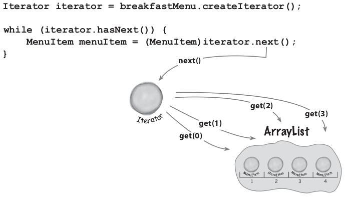
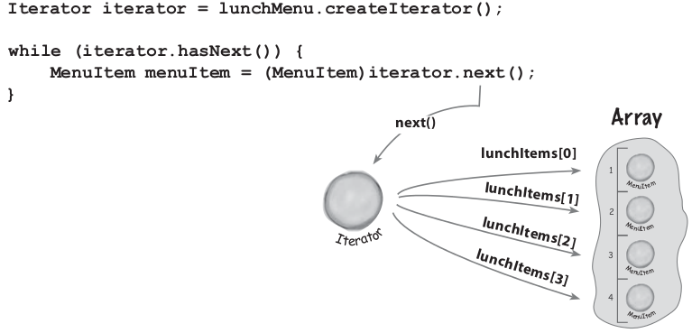
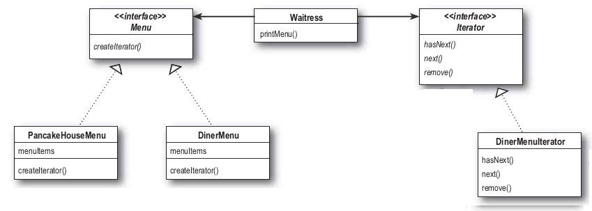
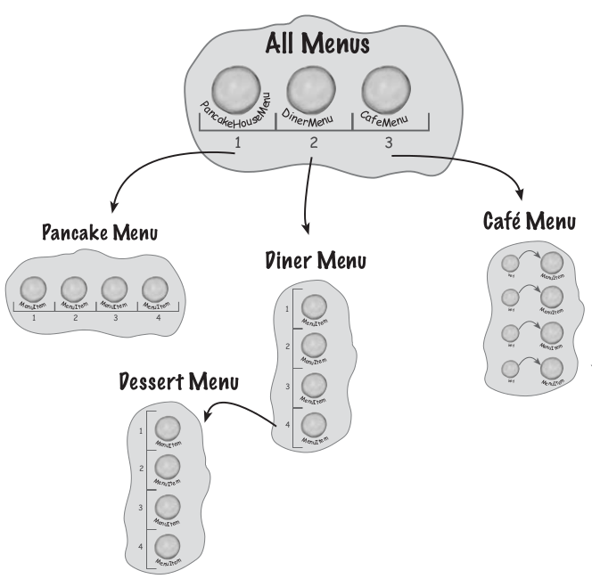
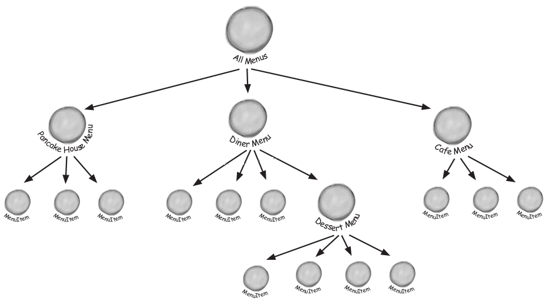
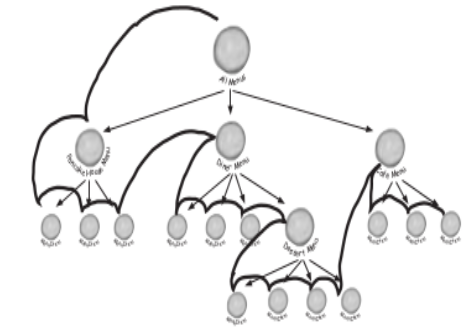
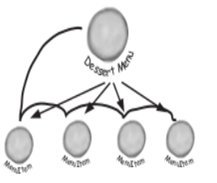

Iterator
Hay muchas maneras de guardar cosas en una coleccioón, podemos guardar en Stacks, Array, ArrayList, HashTable, cada una tiene sus ventajas y desventajas, pero en algun punto hay que iterar los objetos, y cuando lo hacemos es bueno no mostrarle la implemnetacion al cliente.
Vamos a juntar 2 implementaciones de restaurant. Uno hace panques y el otro desayunos, y tienen la misma implementacion para los item de menu pero usan distintas colecciones, uno usa ArrayList y el otro Array
Iterator
Veamos una de las implementaciones de los menu
Iterator
- Esta la implementación que usa ArrayList
- Cada item de menu se agrega en el contructor llamando al método addItem()
- addItem() crea un nuevo menuitem, y lo agrega al ArrayList
getMenuItems() retorna el ArrayList con los items.
Acá le estamos mostrando la implementación al cliente porque le pasamos el ArrayList.
Si cambiamos el tipo de colección todos los que usan este método tienen que cambiar sus implementaciones.
Iterator
Veamos la otra implementacion de los menu
Iterator
Tenemos que hacer un cliente que use los dos menus. Vamos a implementar los siguientes métodos
Implementemos printMenu(), que imprime todos los items del menu
- Para imprimir todos los los items tenemos que llamar al método getMenuItem() en las clases DinerMenu y PancakeHouseMenu y obtener las colecciones
- Luego iteramos para imprimir los items del ArrayList y luego para los del Array
Esto nos va a pasar para cada uno de los métodos que tenga que leer los items de los Menús
Iterator
Sería bueno encontrar una interface que permitiera implementar la misma interface a los menús.
Si no fuera por la diferencia del tipo que devuelve getMenuItem(), de esta manera podríamos minimizar las referencias concreatas y evitar las iteraciones múltiples
El patron Itrator nos va a ayudar a encapsular iteración.

Iterator

Con iterator el cliente obtien un iterator en ves de la coleccion y con este puede acceder a los elementos de una forma única
Iterator
El patrón Iterator depende de una interfaz llamada Iterator
Para agregar un iterador a DinerMenu primero definimos la interfaz iterator
Como estamos usando java vamos a usar la intefaz java.util.iterator, en vez de usar la definida por nosotros.
Iterator
Y ahora necesitamos implementar el iterador concreto para DinerMenu
Cuandi hasNext() devuelve false, quiere decir se acabaron las posiciones o la siguiente posición es null. Cuando esto se da, tengo que terminar con las iteraciones
Iterator
Retocamos DinerMenu para usar DinerMenuIterator
Le vamos a agregar el método create iterator y vamos a sacar el método getMenuItems() ya que no lo vamos a usar mas y expone la implementación interna
El método createIterator() devuelve un objeto DinerMenuIterator usando el Array y se lo devuelve al cliente
El cliente va a recibir un iterator y no tiene porque saber como esta implementado el iterator. Lo unico que tiene que saber es como se usa un iterator, e ir recorriendo los elementos.
Para la clase PancakeHouseMenu tenemos que implementar tambien el metodo createIterator(), pero como usa ArrayList que ya tiene Iterator implementado, asi que simplemente lo devolvemos
Iterator
Retocamos el cliente.
El método printMenu() era uno de los que iteraba las colecciones que le devolvian las clases PancakeHouseMenu y DinerMenu cuando invocabamos el método getMenuItems(). Este era el que tenía los dos bucles.
Ahora el metodo printMenu(Iterator iterator) que recibe un Iterator imprime sin saber que implementacion interna tiene la coleccion. En esta implementacion usamos el mismo método para iterar los elementos de los dos menús, PancakeHouseMenu y DinerMenu
Iterator
Mejoras en el diseño
- Ahora la implementacion del menu esta encapsulada. Antes cuando queriamos los items del menú obteniamos un ArrayList o un Array con lo que no se respetaba la encapsulación.
- Iteramos colecciones que polimorficamente soportan cualquier coleccion que implemente la interfaz java.util.Iterator.
- Lo otro que logramos es que los menus tengan exactamente los mismos métodos.
Lo que nos falta es que implementen una iterfaz común.
Iterator
Implementamos una iterfaz común
Lo que nos falta es que implementen una iterfaz común en para los menús.
Hacemos que PancakeHouseMenu y DinerMenu implementen Menu en las definiciones de clase
y cambiamos el código de Waitress para que no referencia a las implementaciones concretas sino a la interfaz
Por este que referencia la interface Menu
Iterator
Como quedo el diseño
- PancakeHouseMenu y DinerMenu implementan la interface Mwnu.
- Waitress refiere a los menu usando la interface Menu en ves de una clase concreta. Esto reduce la dependencia enter Waitress y las clases concretas. Recordemos "Programar a interfaces no a implementaciones"
- Desacoplamos a Waitress de las implementaciones de los menus, y podemos iterar sobre cualquier lista de items sin saber la implementación.
- Estructura:

Patron Iterator
Proporcionar acceso secuencial a los elementos de un agregado, sin exponer su representación interna.
- Motivación:
- Una lista debe proporcionar un medio de navegar por sus datos sin exponer su estructura interna
- Se debe poder atravesar la lista de varias maneras, pero no añadir operaciones a la lista por cada tipo de recorrido
- Se debe poder realizar varios recorridos simultáneamente
- La solución que propone el patrón es dar la responsabilidad del recorrido a un objeto iterador.
Aplicabilidad:
- Cuando se quiere acceder al contenido de un agregado sin exponer su representación interna
- Cuando se quieren permitir varios recorridos sobre un agregado
- Para proporcionar una interfaz uniforme para recorrer distintos tipos de agregados (esto es, permitir iteración polimórfica)
Patron Iterator
- Participantes:
- Iterator: define interfaz para acceder y recorrer elementos
- ConcreteIterator:
- Implementa la interfaz Iterator
- Mantiene la posición actual en el recorrido del agregado
- Aggregate: define interfaz para crear un objeto Iterator
- ConcreteAggregate: implementa una interfaz de creación del Iterator para devolver la instancia de ConcreteIterator apropiada
- Consecuencias: Permite variaciones en el recorrido de un agregado
- Para cambiar el algoritmo de recorrido basta cambiar la instancia de Iterator concreta
- Nuevos recorridos mediante nuevas subclases de Iterator
- Los iteradores simplifican la interfaz del agregado
- Puede hacerse más de un recorrido a la vez sobre un mismo agregado
Iterator en java
- Iterator:interfaz java.util.Iterator
- ConcreteIterator:implementaciones concretas de Iterator
- Aggregate:Las interfaces Collection, Set, SortedSet, List, Queue de java.util. Incluyen el método iterator(), que devuelve un iterador genérico
- ConcreteAggregate: implementaciones de esas interfaces.
Set es implementada por las clases HashTree, TreeSet, LinkedHashSet.
List es implementada por las clases ArrayList, LinkedList.

Principio de diseño
Única responsabilidad
Una clase debe tener solo una razón para cambiar
Qué tiene de malo si nuestro agregados implementan sus colecciones y operaciones relacionadas?
Cuando se toman mas responsabilidades (como la iteración) le estamos dando a la clase 2 razones para cambiar
- Si la colección cambia tiene que cambiar
- Si queremos cambiar la forma de iterar
Sabemos que siempre tratamos de evitar el cambio a toda costa, porque sabemos todas las oportunidades de generar problemas que esto tiene. Tener 2 razones para cambiar incrementa las posibilidades de cambio.
La solución es asignar solo una responsabilidad a una clase. Si bien esto no es una tarea facil, hay observar cuando una clase esta cambiando en mas de una manera.
Iterator
Si bien el diseño quedo bastante bien, cada vez que queremos agregar un menu nuevo tenemos que tocar el código de la clase Waitress, para agregar la referencia al menu
Estamos violando el principio de "Las clases tiene que estar abiertas para la extensión pero cerradas para la modificación."
Ponemos los menús y luego iteramos cada menú
Como perdimos los nombres de los menús, le agregamos nombres a cada menú
Iterator
Ahora si queremos agregar un submenu postre
Tendríamos no solo que soportar múltiple menús, sino que menús submenús
Seria deseable que el menu dessert sea un elemento de la colección DinnerMenu

Necesitamos guardar un subMenu en DinerMenu, pero no podemos Asignar un Menu a un Array de MenuItem porque son tipos diferentes.
Iterator
Refactoring
Con el nivel de complejidad que alcanzamos si no hacemos un refactoring no vamos a poder soportar la funcionalidad de submenus.
- Necesitamos una estructura de árbol para guardar los menus y submenus

Iterator
Refactoring
- Necesitamso asegurarnos que hay una manera de recorrer los item de cada menu

- Podríamos necesitar recorrer los items de una manera mas flexible que la actual, como por ejemplo recorrer todos los items de los postres o el menu de la Cena inclusive con los postres

Patrón Compostite
Componer objetos en estructuras arbóreas para representar jerarquías todo-parte. Manipular todos los objetos del árbol de manera uniforme
- Motivación: Poniendo objetos simples (menuItems) y contenedores (menus) en la misma estructura creamos una estructura de todo-parte que los clientes los tratan de la misma manera.
- Aplicabilidad:
- Cuando queremos representar jerarquías de objetos todo-parte
- Cuando queremos ser capaz de ignorar la diferencia entre objetos individuales y composiciones de objetos. Los clientes tratarán a todos los objetos de la estructura compuesta uniformemente.
Patron Iterator
- Participantes:
- Component:
- define la interfaz común para los objetos de la composición
- define la interfaz para acceder y gestionar los hijos
- puede definir un comportamiento por defecto común a las subclases
- (opcional) define la interfaz para acceder al padre de un componente en la estructura recursiva, y la implementa si es apropiado
- Leaf:
- representa los objetos hoja (sin hijos) de la composición
- define comportamiento para los objetos primitivos
- Composite:
- define comportamiento para los componentes que tienen hijos
- almacena componentes hijo
- implementa las operaciones de Component para la gestión de hijos
- Client: manipula los objetos de la composición a través de la interfaz Component
Patron Iterator
- Consecuencias:
- Define jerarquías de clases hechas de objetos primitivos y compuestos. Si el código cliente espera un objeto simple, puede recibir también uno compuesto
- Simplifica el cliente. Objetos simples y compuestos se tratan homogéneamente
- Facilita la incorporación de nuevos tipos de componentes
- Puede hacer el diseño demasiado general. Es complicado restringir el tipo de componentes de un composite.
- Los iteradores simplifican la interfaz del agregado
- Puede hacerse más de un recorrido a la vez sobre un mismo agregado
←
→
/
#